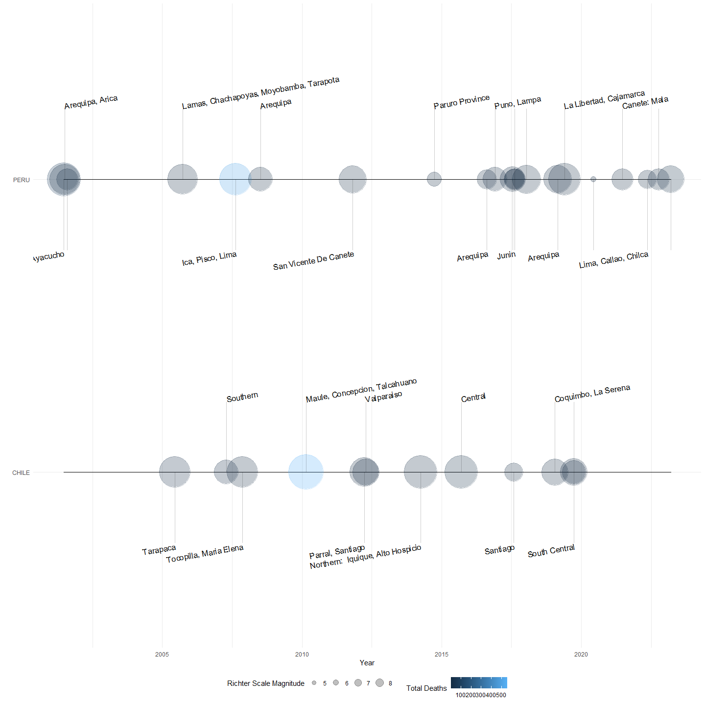
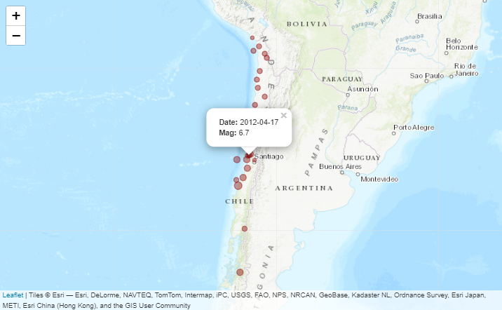
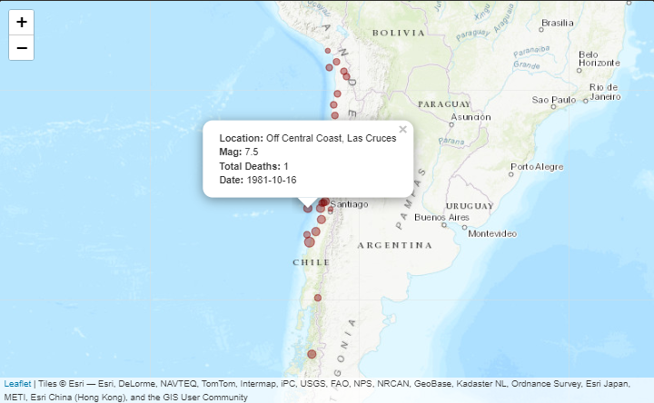

This is my capstone project of the Mastering Software Development in R specialization on Coursera.
The Earthquake data was obtained from the National Centers of Environmental Information (doi: 10.7289/V5TD9V7K).
The quakr package provides quality of life tools for analysis and visualizations of earthquake data.
Installation
You can install the development version of quakr by executing the following code:
remotes::install_github("Karrrramba/quakr")After installation, load the package into your R session with:
Overview
# Load dataset
data("southamerica", package = "quakr")Below you will find examples that illustrate the visualization features. The package’s vignette shows more customization options for timelines and interactive maps.
southamerica %>%
filter(country %in% c("PERU", "CHILE") & lubridate::year(date) >= 2000) %>%
ggplot(aes(x = date, y = country)) +
# Plot a timeline of earthquake events
geom_timeline(aes(xmin = min(date), xmax = max(date),
size = mag, col = total_deaths)) +
# Add labels
geom_timeline_label(aes(label = location),
fontsize = 2,
rot = 10,
check_overlap = TRUE,
label_dodge = TRUE) +
theme_minimal() +
labs(x = "Year",
y = "",
size = "Richter Scale Magnitude",
col = "Total Deaths") +
theme(legend.position = "bottom")
# This is only a snapshot of the resulting interactive plot.
southamerica %>%
filter(country == "CHILE" & lubridate::year(date) >= 2000) %>%
mutate(label = eq_create_label(., defaults = FALSE, "date", "mag")) %>%
eq_map(annot_col = "label", scaling_factor = 5)
